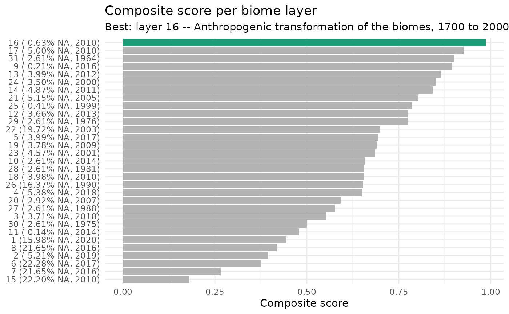
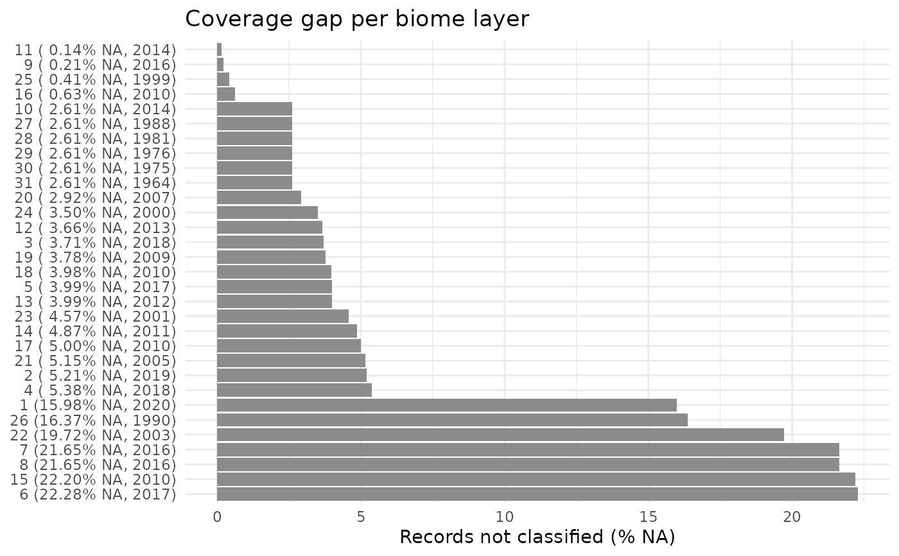
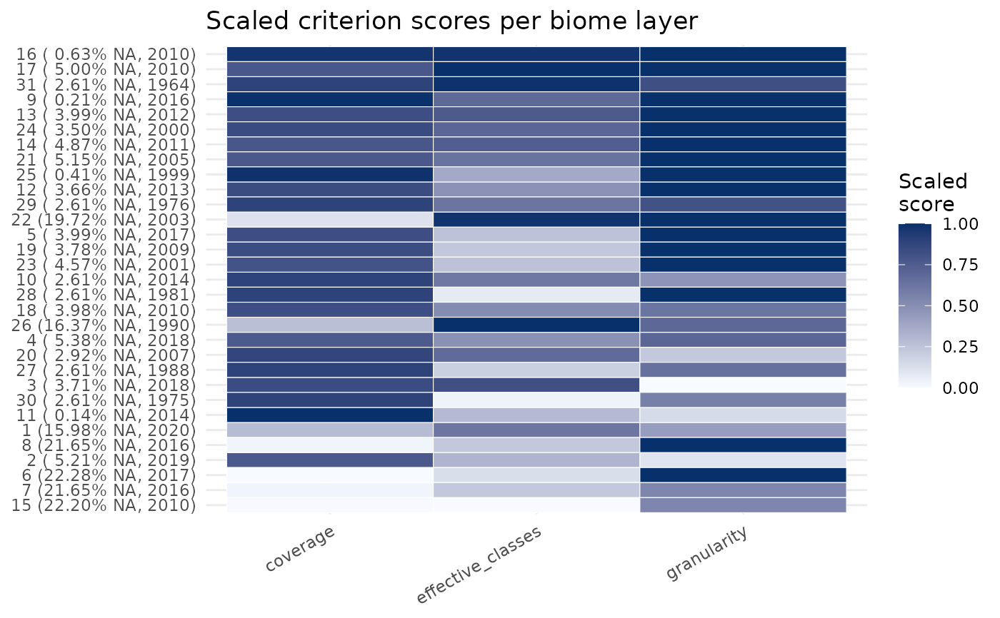

Visualise a biomes_rank result
biomes_show_rank.RdBuilds a ggplot from the data frame returned by biomes_rank().
Usage
biomes_show_rank(ranked, type = c("composite", "na", "criteria"))Arguments
- ranked
A
biomes_rankobject returned bybiomes_rank().- type
One of
"composite"(default, horizontal bar plot ofcomposite_scorewith the top-1 layer highlighted),"na"(percent-NA per layer, sorted ascending), or"criteria"(heatmap of all scaled criteria per layer).
Examples
data("biomes_example")
r <- biomes_rank(biomes_example, verbose = FALSE)
biomes_show_rank(r, type = "composite")

biomes_show_rank(r, type = "na")

biomes_show_rank(r, type = "criteria")
